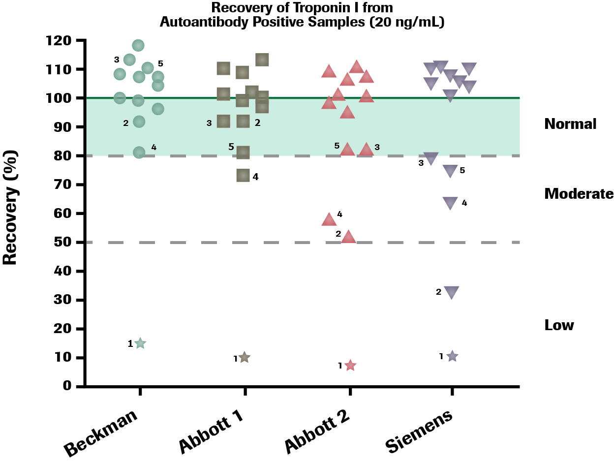

Autoantibody interferences could result in false positives or false negatives 29
*Roche was not part of this study, please reference the Package Insert.
As referenced in the Tang article, the results in the shaded portion of the chart fall within the normal range of recovery. Those falling above the solid line represent over recovery and a false positive. Those falling below the dotted line represent under recovery and a false negative.